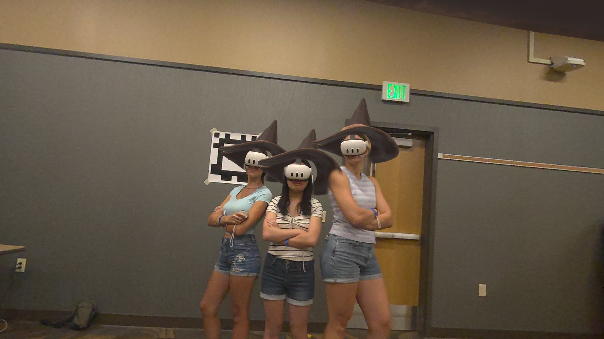

Wizardtag
Cast magic spells with your voice and duel your friends in a mixed reality wizard battle


This game is a fork of Lasertag created for Purdue University's new student orientation. All of the tech in this game, such as the live envrionment scanning and environment lighting effects, comes from that project.

Players yell one of three spells − fireball, lightning, or shield − and compete to score the most eliminations against the opposing team.
I use Vosk ➔, an on-device speech recognition model, to detect magic spell commands. While Vosk isn't as responsive as a bespoke wake-word model might be, latency is still low enough for spells to feel suitably responsive.
I read AprilTags to spatially align headsets to the room and each other. Each headset finds the 'best fit' between their own tag readings against corresponding canonical poses, spatially anchoring virtual elements like respawn points and aligning each headset's coordinate space. This is faster and more robust than using Meta's spatial anchors, which are prone to drift over time.
Credits
The wizard hat model comes from Kateryna Babych ➔ on Sketchfab.
Purdue University's Fusion Studio ➔ funded this project with a grant as part of their student orientation Entertainment Challenge ➔